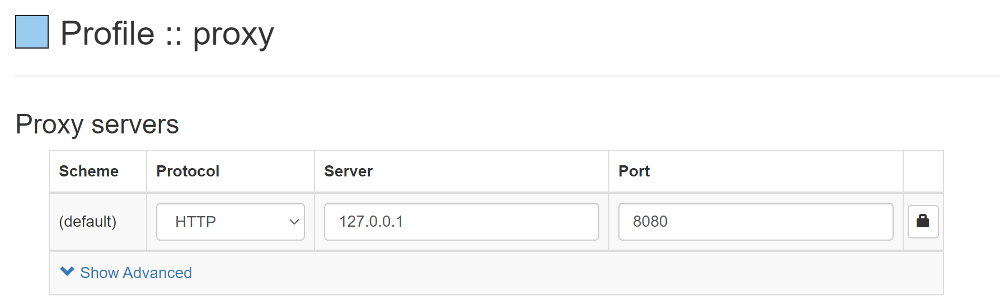

动手写一个 HTTP 正向代理
概念
首先我们来了解一下 HTTP 代理的相关概念，通常来说，有两类 HTTP 代理，一类是正向代理，一类是反向代理，虽都是代理，但仍有区别。
我们平时使用的 VPN 就是正向代理，我们指定一个服务器，然后通过正向代理去连接这个服务器获取资源
Nginx 是典型的反向代理服务器，可以用于负载均衡和缓存，我们不清楚服务器的地址，但是我们访问反向代理服务器的时候，它会自动为我们请求服务器，并且返回相应的内容。
总结：正向代理下，我们知道服务器的具体地址，反向代理下，我们只需要知道代理服务的地址，无需知道具体的服务端地址。
这里，我们讲述正向代理，首先先来简单的回忆一下 HTTP 协议吧，也可以参考之前的 文章
HTTP 协议
HTTP 基于传输层协议而搭建的应用层协议，其实 HTTP 请求和响应没有什么很神奇的部分，就是一个 Client/Server 模型，客户端通过套接字发送数据，服务端解析之后进行处理，然后返回响应。
这里只稍微介绍一下协议格式，想要了解更多的同学可以参考 HTTP/1.1，下面的内容均通过 wireshark 抓包获得。
请求
格式如下：

每一行均以 \r\n 结尾，请求体可以为空
响应
格式如下：

每一行也是以 \r\n 结尾，响应体可以为空
请求和响应在格式上的主要区别在第一行，也就是请求行和响应行的内容不一致，此外，请求和响应的头部取值也有所区别，部分头部只用于请求，部分头部只由于响应，但是常见的绝大多数头部在响应和请求中均可使用。
我们如果要构造一个请求也很简单，创建一个套接字，然后发送上述格式的数据即可：
1 | // 连接服务器 |
同理，响应也是，这里不再赘述，读者可自行编写代码，也可以使用 wireshark 抓包测试。
正向代理实现
上面提到过，在正向代理下，我们会首先连接到代理服务器，然后代理服务会到服务器上请求对应的资源，那么我们身为代理服务器，如何知道客户端需要请求什么资源呢？
这到不同担心，客户端连接代理的时候，是有一定的规范的，不是说随便连，对于 HTTP 协议来说，请求代理服务器和请求普通的服务器大致相同，但是请求的路径一般会设置为绝对路径，比如为 GET http://httpbin.org/ HTTP/1.1，而不是 GET / HTTP/1.1，对于 HTTPS 来说，首先会通过 CONNECT 连接到代理服务器，接受到 200 响应之后才会发送实际的加密数据。
首先我们来考虑一下 HTTP 吧，下面是连接到服务器上的请求：
我们需要做的是获取到对应的服务器地址，也就是 Host 字段，将头部数据解析完成之后，获取该字段即可。
1 | type Request struct { |
获取到服务端的地址之后，建立 TCP 连接，然后将请求发送过去
1 | if !strings.Contains(host, ":") { |
最后将响应返回给客户端，直接调用 io.Copy 即可
1 | tunnel(conn, server) |
如果说，我们想对响应进行过滤或者其他的操作，我们应该进行解析，解析的过程和请求类似，如果需要过滤掉，则不将结果返回，返回一些错误码，比如 403 即可。
对于 HTTPS 协议来说其实也是差不多的，但是由于 HTTPS 采用 SSL/TLS 对数据进行加密，所以我们无法对其实际的请求进行解析，不过对 CONNECT 请求进行解析已经可以满足我们的需求了。
接受到 CONNECT 请求之后，我们首先应该返回 2xx 表示连接成功，然后将请求的数据原封不动的发送给服务端，服务端返回的也原封不动的返回给客户端，我们对其中的数据不关心，即使关心也解密不了。
1 | if request.Method == "CONNECT"{ |
进行测试
下载插件 Proxy SwitchyOmega，如果你使用 Edge，见 这里，如果你使用Google，见 这里
打开插件进行配置，如下

访问一个网址，比如http://httpbin.org，如果可以访问，那么说明代理服务器生效~
完整代码见 GitHub
生活杂笔，学习杂记，偶尔随便写写东西。
动手写一个 HTTP 正向代理